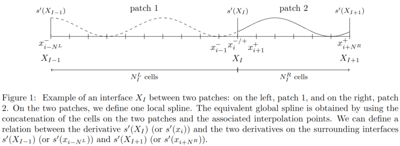
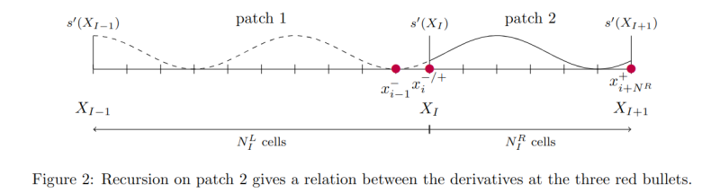
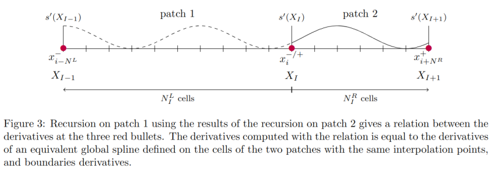
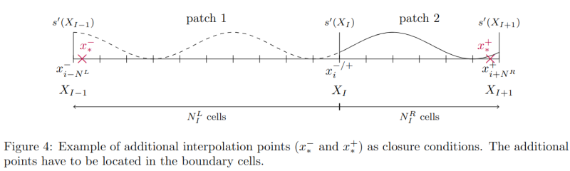

Interface derivatives
On multi-patch geometries, we can impose a \(\mathcal{C}^1\) regularity on the whole domain by fixing identical derivatives and function values on the interface. The operators implemented in this folder propose methods to compute the derivatives at the patch interfaces.
The method applied here is detailed in Vidal et al. (2025)2.
Assumptions:
- the splines are cubic;
 every break point has to be an interpolation point for the splines.
every break point has to be an interpolation point for the splines.
Warning:
For the non-uniform meshes, please do not use Greville points as interpolation points but the
break points as interpolation points.
If you do not use derivatives as closure condition, two additional interpolation points have to be placed in
the boundary cells.
Contents
- Relation between derivatives on the boundaries of two connected patches: It documents the
SingleInterfaceDerivativesCalculatoroperator. - How to use the
SingleInterfaceDerivativesCalculatoroperator?: It documents how to use the operator in the code. - Formulae: It details the formulae applies in the operator.
Relation between derivatives on the boundaries of two connected patches
We consider an interface between two patches. The method computes the derivative at the interface of an equivalent global spline defined on the two patches of the interface.
Here is an illustration of the patch layout. For this example, we chose this patch connection but the method and the implemented operator works for any patch connection.

In the code, we are using the following relation between derivatives at consecutive interfaces,
with
- \(x_{i}\) the interpolation point located on the interface,
- \(x_{i-N^L}\) the interpolation point located on the interface to the left of the given interface (left bound on patch 1),
- \(x_{i+N^R}\) the interpolation point located on the interface to the right of the given interface (right bound on patch 2),
- \(N^L\) the number of cells on the left patch (patch 1),
- \(N^R\) the number of cells on the right patch (patch 2),
- \(a^i_{N^L,N^R}\), \(b^i_{N^L,N^R}\) and \(c^i_{N^L,N^R}\) coefficients to determine.
Note: \(a^i_{N^L,N^R}\) and \(b^i_{N^L,N^R}\) only depend on the interpolation points. The coefficient \(c^i_{N^L,N^R}\) can be written as a linear combination of the function values \(\{f_{i+k}\}_{k = - N^L}^{N^R}\) on the patches:
with \(\{\omega_{k, N^L,N^R}^i\}_{k = - N^L}^{N^R}\) depending only on the interpolation points.
Approximation: The formula gives the exact derivative of an equivalent global spline. It is possible to use an approximation of this formula by using is smaller number of cells on each patch. Instead of choosing the \(N^L\) cells of patch 1, we can chose \(N^L_{reduc}\) first cells from the interface on patch 1. And we can do the same on patch 2 with \(N^R_{reduc}\) first cells from the interface. The approximation is then given by
There are different ways to compute the coefficients \(a^i_{N^L,N^R}\), \(b^i_{N^L,N^R}\), and \(c^i_{N^L,N^R}\). There are described in the section Formulae.
Firstly, we describe how to use the SingleInterfaceDerivativesCalculator operator.
How to use the SingleInterfaceDerivativesCalculator operator?
When SingleInterfaceDerivativesCalculator is instantiated, it computes and stores the coefficients
\(a^i_{N^L,N^R}\) and \(b^i_{N^L,N^R}\) and the weights \(\{\omega_{k, N^L,N^R}^i\}_{k = - N^L}^{N^R}\).
To instantiate it, we need the index ranges of the interpolation points. If we want to use the exact formula,
we need to provide the index ranges with all the points,
SingleInterfaceDerivativesCalculator<Interface_12> derivatives_calculator (idx_range_patch_1, idx_range_patch_2);
If we want to use an approximation, we provide the index ranges with the interpolation points on the selected cells,
Patch1::IdxRange1D idx_range_patch_1_reduced (idx_range_patch_1.take_first(N_L_reduc +1));
Patch2::IdxRange1D idx_range_patch_2_reduced (idx_range_patch_2.take_last(N_R_reduc +1));
SingleInterfaceDerivativesCalculator<Interface_12> derivatives_calculator (idx_range_patch_1_reduced, idx_range_patch_2_reduced);
Remark: For interpolation with interpolation points as closure condition, a special treatment has to be carried out on the boundary cells (see Additional interpolation point not on a break point). To apply this treatment, we specify it in the template parameter as follows.
// If we want to apply the treatment on Patch 1 and Patch 2
SingleInterfaceDerivativesCalculator<Interface_12, ddc::BoundCond::GREVILLE, ddc::BoundCond::GREVILLE> derivatives_calculator (idx_range_patch_1, idx_range_patch_2);
// or if we want to apply the treatment only on Patch 1
SingleInterfaceDerivativesCalculator<Interface_12, ddc::BoundCond::GREVILLE, ddc::BoundCond::HERMITE> derivatives_calculator (idx_range_patch_1, idx_range_patch_2);
// or if we want to apply the treatment only on Patch 2
SingleInterfaceDerivativesCalculator<Interface_12, ddc::BoundCond::HERMITE, ddc::BoundCond::GREVILLE> derivatives_calculator (idx_range_patch_1, idx_range_patch_2);
If we want to use an approximation where the boundary cells are not involved (even for interpolation points as closure condition on the global domain), the default template parameter can be used to avoid applying the treatment on inner cells.
The coefficients can be collected with the following functions:
derivatives_calculator.get_coeff_deriv_patch_1()returns the coefficient \(b^i_{N^L,N^R}\);derivatives_calculator.get_coeff_deriv_patch_2()returns the coefficient \(a^i_{N^L,N^R}\);derivatives_calculator.get_function_coefficients(function_1, function_2)returns the coefficient \(c^i_{N^L,N^R}\) (or \(c^i_{N^L_{reduc},N^R_{reduc}}\) for approximation).
If we want to apply the exact formula, we need to sum these coefficients,
double const coeff_deriv_left = derivatives_calculator.get_coeff_deriv_patch_1(); // coeff b
double const coeff_deriv_right = derivatives_calculator.get_coeff_deriv_patch_2(); // coeff a
double const sum_values = derivatives_calculator.get_function_coefficients(function_1, function_2); // coeff c
double const deriv_interface_right = 1e1; // a given value
double const deriv_interface_left = 1e1; // a given value
double const deriv_interface = sum_values + coeff_deriv_left * deriv_interface_left + coeff_deriv_right * deriv_interface_right;
If we want to apply an approximation of the formula, we only need \(c^i_{N^L_{reduc},N^R_{reduc}}\),
double const deriv_interface = derivatives_calculator.get_function_coefficients(function_1, function_2); // coeff c
Remark: It is also possible to use slices for the functions values,
double const deriv_interface =
derivatives_calculator.get_function_coefficients(
function_1[idx_range_patch_1_reduced],
function_2[idx_range_patch_2_reduced]); // coeff c
Formulae
We use a method inspired by Crouseille et al. (2009)1, and detailed in Vidal et al.(2025)2. To establish the formulae, we use the following relation between each consecutive interpolation point,
with the local coefficients given by
and \(\Delta x^R_{i} = x^R_{i+1} - x^R_{i} \text{, } \Delta x^L_{i} = x^L_{i} - x^L_{i-1}\), and \(\{f^{+/-}_{i+k}\}_k\) the function values at the interpolation points on patch 1 (+) and patch 2 (-).
Remark: As mentioned above, the coefficient \(c^i_{N^L,N^R}\) can be written as a linear combination of the interpolating function values. In the code, we store the weights in front of each interpolating function value as they depend only on the grids. For the same reason, we store \(\gamma_i\) as a vector,
Recursive formula
We start the recursion on patch 2. We initialise it with,
(i.e. for the weights,
with \(\gamma_{i,i-1} = ({\bf \Gamma_i})_0, \ \gamma_{i,i} = ({\bf \Gamma_i})_1, \ \gamma_{i,i+1} = ({\bf \Gamma_i})_2\) and null for different k.)
and for \(n = 2, ..., N^R-1\),
(i.e. for the weights,
)
It gives us a relation linking the derivatives at the three points on the following illustration,

We keep doing the recursion on patch 1,
(i.e. for the weights,
)
and for \(m = 2, ..., N^L-1\),
(i.e. for the weights,
)
The two recursions gives us a relation linking the derivatives at the three consecutive interface (see the following illustration),

Additional interpolation point not on a break point
If we use interpolation points as closure conditions for the equivalent global spline, the last local coefficients must be modified.
Warning:
We consider here that all the break points are interpolation points. For cubic splines,
two additional interpolation points are added.
They are added in the boundary cells of the mesh where the equivalent global spline is defined.

If there is an additional interpolation point in the left boundary cell, then the last step of the second part of the recursion need to use these modified local coefficients,
with
with \(H_0^{*,-} \text{, } H_1^{*,-} \text{, } K_0^{*,-} \text{ and } K_1^{*,-}\) the evaluations of \(H_0 \text{, } H_1 \text{, } K_0 \text{ and } K_1\) at \(\frac{x^L_{*} - x^L_{i-1}}{\Delta x^L_{i}}\), with \(x^L_{*}\) the additional interpolation point.
If there is an additional interpolation point in the right boundary cell, then the last step of the first part of the recursion need to use these modified local coefficients,
and \(H_0^{*,+} \text{, } H_1^{*,+} \text{, } K_0^{*,+} \text{ and } K_1^{*,+}\) the evaluations of \(H_0 \text{, } H_1 \text{, } K_0 \text{ and } K_1\) at \(\frac{x^R_{*} - x^R_{i}}{\Delta x^R_{i}}\), with \(x^R_{*}\) the additional interpolation point.
Explicit formula
If the interpolation points are uniform (\(\Delta x^L_{i} = \Delta x^L \text{ and } \Delta x^R_{i} = \Delta x^R \text{, } \forall i\)), then the recursion formula is equivalent to the following explicit formula.
To lighten the notation, we note \(n_1 = N^L\) and \(n_2 = N^R\).
We introduce the following sequence to define the explicit formulae,
with the weights given by,
and \(a^I_{1,1} = -\frac{1}{2} \frac{\Delta x^L}{\Delta x^R +\Delta x^L}\) and \(b^I_{1,1} = -\frac{1}{2} \frac{\Delta x^R}{\Delta x^R +\Delta x^L}\).
References
-
Crouseilles, N., Latu, G., Sonnendrücker, E.: A parallel vlasov solver based on local cubic spline interpolation on patches. Journal of Computational Physics 228(5), 1429–1446 (2009) ↩
-
Vidal, P., Bourne, E., Grandgirard, V., Mehrenberger, M., Sonnendrücker, E., Local cubic spline interpolation for Vlasov-type equations on a multi-patch geometry. Journal of Scientific Computing, (2025) [SUBMITTED - NOT PUBLISHED] ↩↩